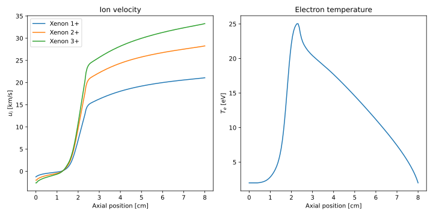

Run a simulation from python
HallThruster comes bundled with a script that enables users to run simulations from python. To use this script, you will first need to install HallThruster as described in the home page or tutorial.
Next, launch Julia and activate the environment in which you have installed HallThruster. Check HallThruster.PYTHON_PATH to see the absolute path to the python script on your machine.
HallThruster.PYTHON_PATH — ConstantThe absolute path to the HallThruster python code on your machine.
julia> using HallThruster; HallThruster.PYTHON_PATH
"/Users/archermarks/src/HallThruster/python"Next, open a python script and import the path returned by python_script_path(). The exact path will differ depending on where you install HallThruster.jl and what operating system you're using.
import sys
sys.path.append("<YOUR PATH>/HallThruster/python")
import hallthruster as hetWith HallThruster imported, you can create the inputs to your simulation. These are exactly identical to those used for the JSON interface, so we will not belabor them here. You can either use a dictionary or a path to a JSON file.
As in the Julia version, we first create a config dict to hold geometric and plasma properties.
config = {
"thruster": {
"name": "SPT-100",
"geometry": {
"channel_length": 0.025,
"inner_radius": 0.0345,
"outer_radius": 0.05,
},
"magnetic_field": {
"file": "bfield_spt100.csv"
}
},
"propellants": [
{
"gas": "Xenon",
"flow_rate_kg_s": 5e-6,
"max_charge": 3,
}
],
"discharge_voltage": 300.0,
"domain": (0.0, 0.08),
"anom_model": {
"type": "TwoZoneBohm",
"c1": 0.00625,
"c2": 0.0625,
},
}Next, we create a simulation dict to hold timestepping properties.
simulation = {
"dt": 5e-9,
"adaptive": True,
"grid": {
"type": "EvenGrid",
"num_cells": 100,
},
"num_save": 100,
"duration": 1e-3,
}Lastly, we create a postprocess dict to hold the output file and desired output format.
postprocess = {
"output_file": "output.json",
"save_time_resolved": False,
"average_start_time": 5e-4,
}With these created, we can run our simulation. Note that if we already have a JSON file with these inputs, we can pass the json path instead of the dictionary.
input = {"config": config, "simulation": simulation, "postprocess": postprocess}
solution = het.run_simulation(input, jl_env = ".")Here, we have provided the keyword argument jl_env to tell Python where it should look for HallThruster. This should be the directory in which you have a Project.toml specifying HallThruster as a dependency. If left blank, the script will assume that you want to use the global environment.
The run_simulation function will return a solution output prepared according to postprocess. If postprocess.output_file is not blank, the solution will also be written to the specified file in addition to being returned from the function.
Extracting results
We can call solution.keys to examine the output.
>>> solution.keys()
dict_keys(['input', 'output'])As in the JSON interface, we duplicate the inputs used to run the simulation into input, and put the results of the simulation in output.
>>> solution['input'].keys()
dict_keys(['config', 'simulation', 'postprocess'])
>>> solution['output'].keys()
dict_keys(['retcode', 'error', 'average'])If we had requested time-resolved output, output would have a frames field in addition to average. We will first want to examine the return code to see if the simulation completed successfully.
>>> output = solution['output']
>>> output['retcode']
'success'The simulation outputs can be examined and plotted similarly to the julia interface. The fields of each frame are as follows:
>>> output['average'].keys()
dict_keys(['thrust', 'discharge_current', 'ion_current', 'mass_eff', 'voltage_eff', 'current_eff', 'divergence_eff', 'anode_eff', 't', 'z', 'nn', 'ni', 'ui', 'niui', 'B', 'ne', 'ue', 'potential', 'E', 'Tev', 'pe', 'grad_pe', 'nu_en', 'nu_ei', 'nu_anom', 'nu_class', 'mobility', 'channel_area', "ions", "neutrals"])Here's an example showing how to analyze both ion and electron quantities.
import matplotlib.pyplot as plt
import numpy as np
f, axes = plt.subplots(1, 2, figsize = (10,5))
xlabel = 'Axial position [cm]'
axes[0].set_xlabel(xlabel)
axes[1].set_xlabel(xlabel)
axes[0].set_ylabel('\$u_i\$ [km/s]')
axes[1].set_ylabel('\$T_e\$ [eV]')
axes[0].set_title('Ion velocity')
axes[1].set_title('Electron temperature')
config = solution['input']['config']
propellant = config['propellants'][0]
avg = solution['output']['average']
z_cm = np.array(avg['z']) * 100
for j in range(propellant["max_charge"]):
ui_km_s = np.array(avg["ions"]["Xe"][j]["u"]) / 1000
axes[0].plot(z_cm, ui_km_s, label = f"{propellant['gas']} {j+1}+")
axes[1].plot(z_cm, avg['Tev'])
axes[0].legend()
plt.tight_layout()
plt.show()This produces the following plot: 
This example can is also availabled as a complete python script in the python folder of the root directory.